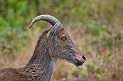
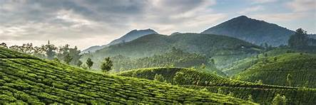
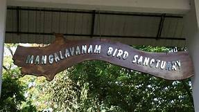

 Eravikulam National Park is a 97 km 2 national park located along the Western Ghats in the Idukki and Ernakulam districts of Kerala in India. Situated between 10º05'N and 10º20' north, and 77º0' and 77º10' east, (See: map.) it is the first national park in Kerala. |
| FORT KOCHI  Fort Kochi, the western part of the Kochi city of Ernakulam district in Kerala. It is about 12 km away from Ernakulam Town. Fort Kochi has played an important role in the history of Kerala. Fort Kochi also has several attractions like the Santa Cruz Basilica. Fort Kochi also houses many historical monuments such as the St. Francis Church, the first church of Vasco da Gama, the Dutch Seminary, the China Vela and many others. The Indian Navy ship, Dronacharya, is located in Fort Kochi. |
| MANGALAVANAM BIRD SANCTUARY  Mangalavanam is an ecologically sensitive area situated at the centre of the Indian city of Kochi, covering about 2.74 hectares.[1] It also houses a shallow tidal lake connected with Kochi backwaters by a canal. It is situated behind the Kerala High Court building. It is a nesting ground for a large variety of migratory birds and supports many types of mangroves. The Managalavanam is often regarded as the "green lung of Kochi",[2] considering its role in keeping the city's air pollution under check. The area is a roosting place for many kinds of resident and migratory birds. |